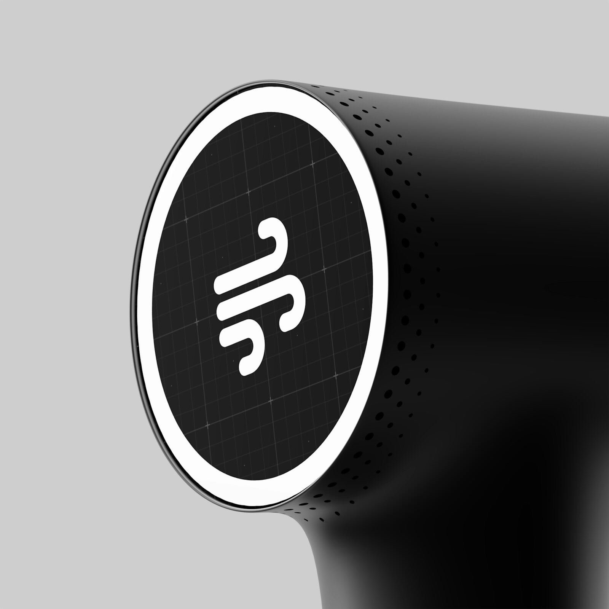

Best Body Contouring & Sculpting Tech

Body contouring tools range from a few dollars to a few hundred, and the price gap usually tracks how targeted the result is. These four picks split by approach: a percussion gun for everyday muscle recovery, a hands-on wood therapy set for manual lymphatic work, an EMS belt for passive toning, and an electric sculpting device that layers heat, vibration, and red light for a more involved at-home routine.
| Product | Tier | Best for |
|---|---|---|
| TOLOCO Massage Gun | Recovery pick | everyday muscle recovery after a workout or a long day on your feet |
| JUANWAN 10-in-1 Wood Therapy Massage Tools | Hands-on pick | manual lymphatic drainage and contouring massage without any electronics |
| NEWPINE EMS Toning Belt | Toning pick | passive muscle toning on the abdomen, arms, or legs while doing something else |
| SculpTrimly 3-in-1 Body Sculpting Machine | Targeted pick | a more involved routine combining heat, microcurrent, cupping, and red light |
1. TOLOCO Massage Gun
Recovery pick
Similar style shown — see the exact model and finish on Amazon.
- Design: handheld percussion massager with multiple speed settings and interchangeable heads
- Popularity: the #1 best seller in its category, with tens of thousands of verified ratings
- Best for: loosening tight muscles and speeding up recovery after exercise or a long day
2. JUANWAN 10-in-1 Wood Therapy Massage Tools
Hands-on pick
Similar style shown — see the exact model and finish on Amazon.
- Design: a set of contoured wooden tools (maderoterapia) for manual contouring and lymphatic drainage massage
- Technique-dependent: results depend more on consistent technique than on the tools themselves
- Best for: a no-electronics, hands-on routine you can do yourself or with a partner
3. NEWPINE EMS Toning Belt
Toning pick
Similar style shown — see the exact model and finish on Amazon.
- Design: a wearable belt using electrical muscle stimulation on the abdomen, arms, or legs
- Hands-free: works passively while you read, work, or watch TV
- Best for: adding passive muscle engagement on top of an existing routine, not replacing exercise
4. SculpTrimly 3-in-1 Body Sculpting Machine
Targeted pick
Similar style shown — see the exact model and finish on Amazon.
- Design: combines heat, microcurrent, cupping suction, and red light in one handheld device
- Multi-function: built for lymphatic drainage, skin tightening, and targeted contouring in one routine
- Best for: someone ready to commit to a more involved, multi-step at-home sculpting routine
Which one should you get?
Match the pick to how much routine you actually want to commit to: the massage gun is useful on its own regardless of any contouring goal, the wood therapy set rewards people willing to learn a manual technique, the EMS belt suits a hands-free add-on, and the sculpting machine is for someone ready to spend real time on a multi-step routine. When in doubt, start with the massage gun — you'll use it either way.
Frequently asked questions
Do body contouring tools actually reduce fat?
No handheld device removes fat — these tools support circulation, muscle engagement, and the appearance of skin firmness, which is a different (and more realistic) claim than fat loss.
How often should I use an EMS toning belt?
Most belts are designed for short daily sessions of 15–20 minutes; more isn't automatically better, and the included guide's recommended frequency is a safer starting point than maximizing use.
Is wood therapy massage safe to do at home?
It's generally safe when done gently and consistently, but it isn't a substitute for professional lymphatic drainage if you have a specific medical concern — check with a doctor first if you're unsure.